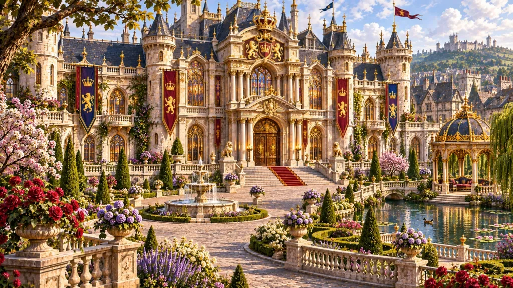
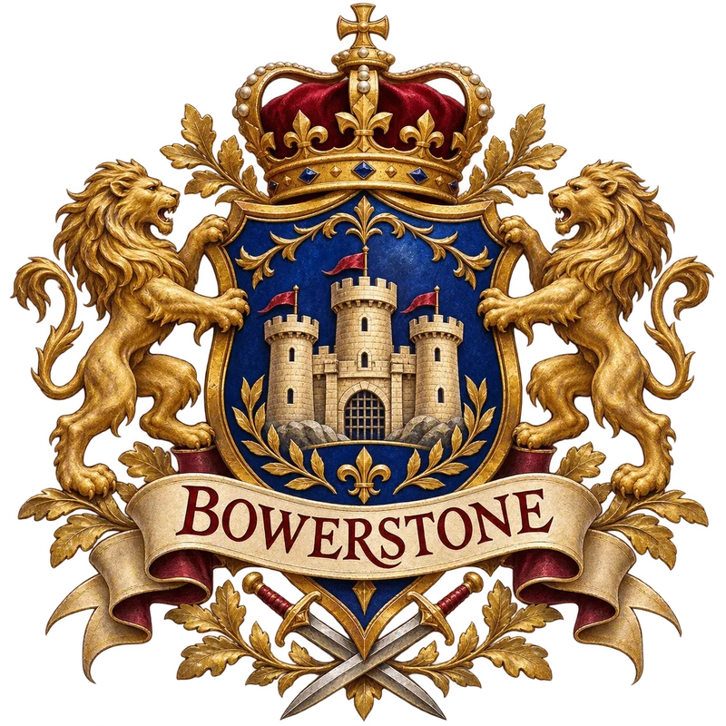

View regional crestBowerstone
The royal capital
Albion’s capital is a collision of royal politics, crowded markets, wealthy Millfields and industrial districts. Visit the Guild, palace or shops, and discover the city’s ordinary and extraordinary residents.
Places to explore
Bowerstone PalaceBowerstone MarketOld TownMillfieldsThe Guild
People to meet
Barnaby FumbleEffie KnottJack GristleCrown Prince FrederickPrince RupertLucian VellGage FenwickLexi Koscheeva
View travel passport